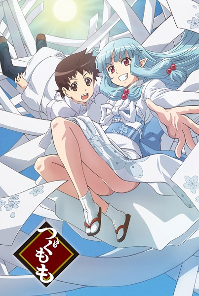
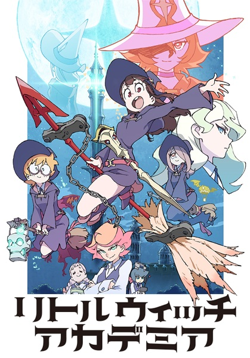
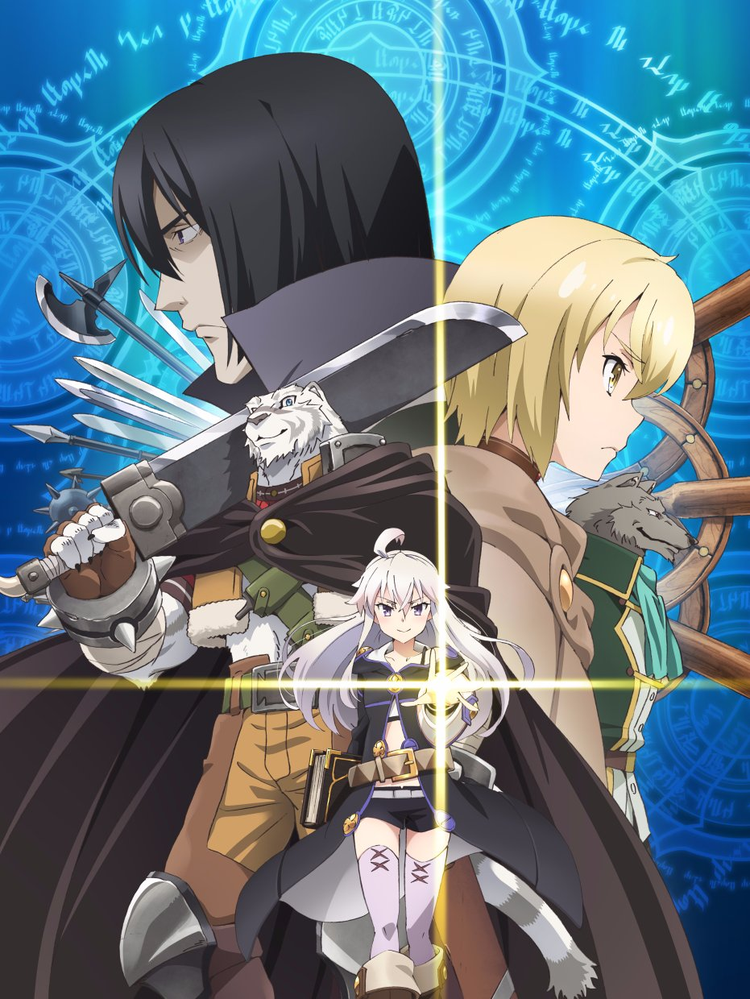
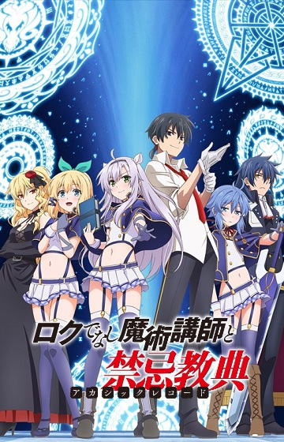
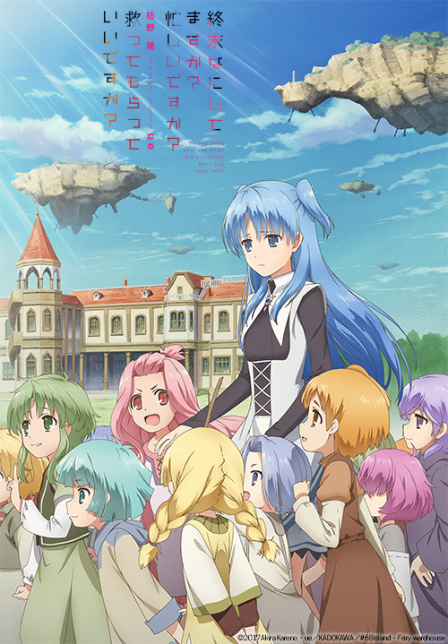
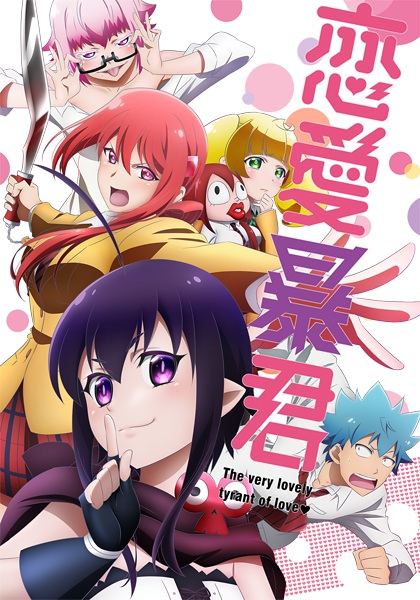
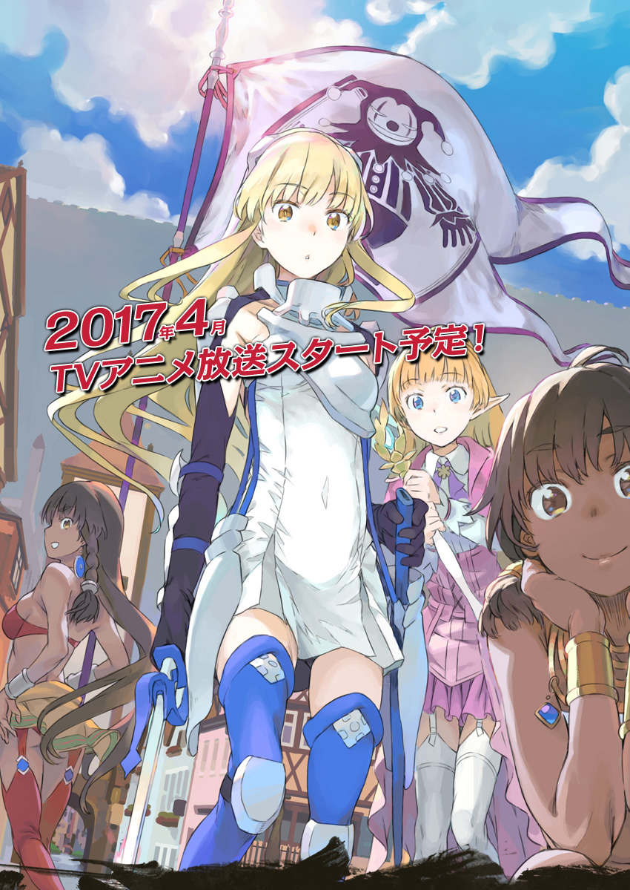
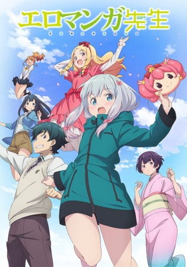
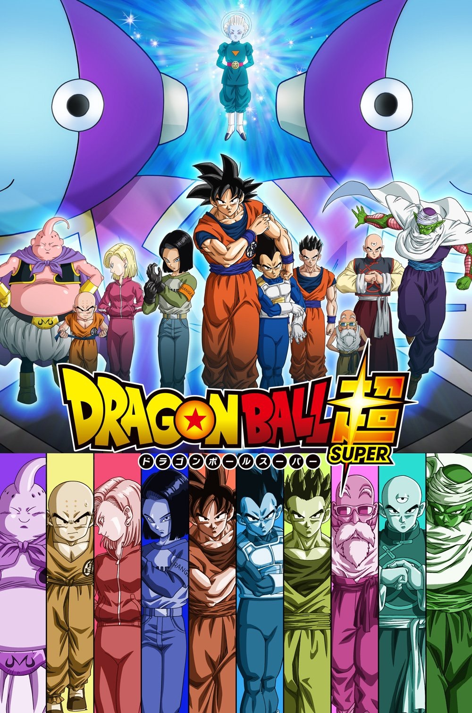

Spring 2017
Sunday

Tsugumomo
つぐもも
Action ・ Comedy ・ Supernatural ・ Ecchi ・ School ・ Seinen
Episode: 2/12
Kazuya Kagami never goes anywhere without the precious "Sakura Obi" his mother gave him. One day a beautiful, kimono-clad girl named Kiriha appeared before him. Kiriha naturally began to live with Kazuya in his room. Then there's Chisato, Kazuya's childhood friend with glasses and a ponytail, who meddles in his affairs. Soon there's also an overprotective older sister who seems to want to take baths with him. Jumble in a huge-chested priestess, a good-looking sorceress named Kokuyoura, beautiful women, and hot girls, and Kazuya's happy, embarrassing, confusing life begins…
Simulcast on Crunchyroll.(08:30)

Little Witch Academia
リトルウィッチアカデミア
Adventure ・ Comedy ・ Magic ・ Fantasy ・ School
Episode: 15/25
The story revolves around Akko, who as a child watched the witch Shiny Chariot perform a show, and from then on dreamed of becoming a witch. She enters the Luna Nova Academy, a school for witches that Shiny Chariot attended. In this new town she meets new friends and starts a new school life. At the school she has lessons on riding brooms and the wonder of magic, but Akko and her friends Lotte and Sucy keep getting wrapped up in tumultuous events.
Fansubbed by: Asenshi
Monday

Grimoire of Zero
ゼロから始める魔法の書
Action ・ Fantasy
Episode: 1/12
Year 526 of the Liturgical Calendar. The world knew that witches existed, and that they practiced the notorious art of sorcery. Nevertheless, the world did not know anything about the study of magic.
Our story follows a half-man, half-beast mercenary; humans mockingly call his kind the "fallen beasts." He always dreamt of becoming a human, but one day, he met a witch who would change his life forever.
"Do you desire a human form? Then be my escort, mercenary!"
The witch introduced herself as "Zero," and explained that she was searching for a one-of-a-kind magical tome that bandits had stolen from her lair. Entitled "The Book of Zero," the grimoire supposedly contained valuable magical knowledge that could be used to effortlessly bring the world to its knees.
Thus, in order to realize his dream of becoming a human, the mercenary must accompany Zero on her journey—despite her being one of the witches he so loathed.
This is the story of a haughty sorceress and a kindhearted beast.
Simulcast on Amazon (US).
Tuesday

Akashic Records of Bastard Magic Instructor
ロクでなし魔術講師と禁忌教典
Action ・ Magic ・ Fantasy ・ School
Episode: 2/12
Sistina attends a magical academy to hone her skills in the magical arts, hoping to solve the mystery of the enigmatic Sky Castle. After the retirement of her favorite teacher, the replacement, Glen, turns out to be a tardy, lazy, and seemingly incompetent bastard of an instructor. How is it that Glen was hand-picked by the best magician in the academy?!
Simulcast on Crunchyroll. (08:30)

What do you do at the end of the world? Are you busy? Will you save us?
終末なにしてますか？忙しいですか？救ってもらっていいですか？
Sci-Fi ・ Drama ・ Romance ・ Fantasy
Episode: 1/??
Five hundred years have passed since the humans went extinct at the hands of the fearsome and mysterious 'Beasts'. The surviving races now make their homes up on floating islands in the sky, out of reach of all but the most mobile of Beasts.
Only a small group of young girls, the Leprechauns, can wield the ancient weapons needed to fend off invasions from these creatures. Into the girls’ unstable and fleeting lives, where a call to certain death could come at any moment, enters an unlikely character: a young man who lost everything in his final battle five hundred years ago, the last living human awakened from a long, icy slumber.
Unable to fight any longer, Willem becomes the father that the girls never had, caring for and nurturing them even as he struggles to come to terms with his new life, in which he feels the pain of helplessly waiting for his loved ones to return home from battle that his 'Daughter' once felt for him so long ago. Together, Willem and the girls gradually come to understand what family means and what is truly worth protecting.
Simulcast on Crunchyroll.
Thursday

Love Tyrant
恋愛暴君
Comedy ・ Supernatural ・ Romance ・ School
Episode: 1/12
A Kiss Note is a powerful notebook that makes anyone who has their name written together will instantly fall in love if they kiss each other regardless of any circumstances. This magical and very familiar item belongs to an angel named Guri whose job as cupid is to create couples. However, she accidentally writes down Aino Seiji, a regular high school student, and unless he kisses someone, Guri will die. She convinces Seiji to go kiss his crush, Hiyama Akane, the school's popular girl who turns out has even stronger feelings for him, bordering on obsessive and psychotic. Eventually Akane and Seiji come together but not before Guri decides that she likes Seiji as well. What seems awesome to most guys becomes hell for Seiji who just wants a normal relationship with girls.
Simulcast on Crunchyroll. (12:05)
Friday

Hinako Note
ひなこのーと
Slice of Life ・ Comedy
Episode: 1/12
Hinako lives in the countryside and is poor at speaking. She wants to improve her speech to be able to talk to people fluently, so she moves to Tokyo and plans to join the drama club in high school. When she arrives, however, it turns out her boarding house is a secondhand bookstore, and a beautiful girl who eats books lives there.
Simulcast on Crunchyroll. (06:30)

Is It Wrong to Try to Pick Up Girls in a Dungeon?: Sword Oratoria
ダンジョンに出会いを求めるのは間違っているだろうか外伝 ソード・オラトリア
Action ・ Adventure ・ Fantasy
Episode: 0/12
Sword princess Aiz Wallenstein. Today, once again, the strongest female swordsman heads to the giant labyrinth known as the "Dungeon" along with her allies. On the 50th floor where mysteries and threats such as a decayed dragon's corpse that crumbles to ash and an irregularity that creeps ever closer to the party loom, Aiz calls for the wind and heads deeper into the darkness of the Dungeon. Eventually, she finds herself meeting a boy for the first time. "Um, are you OK?" In the Labyrinth City of Orario, the contrasting stories of the boy and the girl intersect!
Simulcast on Amazon (US).
Saturday

Attack on Titan S2
進撃の巨人
Action ・ Super Power ・ Drama ・ Fantasy ・ Shounen
Episode: 2/12
Eren Jaeger swore to wipe out every last Titan, but in a battle for his life he wound up becoming the thing he hates most. With his new powers, he fights for humanity’s freedom facing the monsters that threaten his home. After a bittersweet victory against the Female Titan, Eren finds no time to rest—a horde of Titans is approaching Wall Rose and the battle for humanity continues!
Simulcast on Crunchyroll. (07:30)

Eromanga-sensei
エロマンガ先生
Comedy ・ Drama ・ Romance
Episode: 1/??
The "new sibling romantic comedy" revolves around Masamune Izumi, a light novel author in high school. Masamune's little sister is Sagiri, a shut-in girl who hasn't left her room for an entire year. She even forces her brother to make and bring her meals when she stomps the floor. Masamune wants his sister to leave her room, because the two of them are each other's only family.
Masamune's novel illustrator, pen name "Eromanga," draws extremely perverted drawings, and is very reliable. Masamune had never met his illustrator, and figured he was just a disgusting, perverted otaku. However, the truth is revealed... that his "Eromanga-sensei" is his own younger sister! To add to the chaos that erupts between the siblings, a beautiful, female, best-selling shoujo manga creator becomes their rival!
Simulcast on Crunchyroll. (10:00)

Dragon Ball Super
ドラゴンボール超
Action ・ Adventure ・ Comedy ・ Super Power ・ Martial Arts ・ Fantasy ・ Shounen
Episode: 85/??
Set just after the events of the Buu Saga of Dragon Ball Z, a deadly threat awakens once more. People lived in peace without knowing who the true heroes were during the devastating battle against Majin Buu. The powerful Dragon Balls have prevented any permanent damage, and our heroes also continue to live a normal life. In the far reaches of the universe, however, a powerful being awakens early from his slumber, curious about a prophecy of his defeat.
Join Gokuu, Piccolo, Vegeta, Gohan, and the rest of the Dragon Ball crew as they tackle the strongest opponent they have ever faced. Beerus, the god of destruction, now sets his curious sights on Earth. Will the heroes save the day and prevent earth's destruction? Or will the whims of a bored god prove too powerful for the Saiyans? Gokuu faces impossible odds once more and fights for the safety of his loved ones and the planet.
Simulcast on Crunchyroll. (18:15)